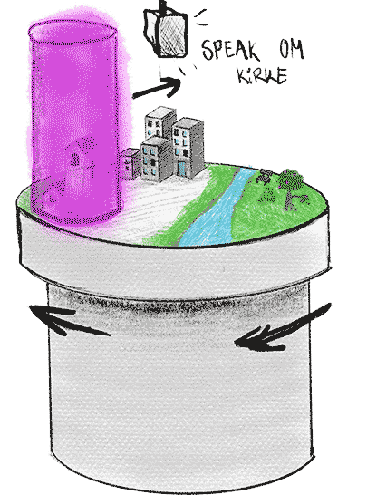
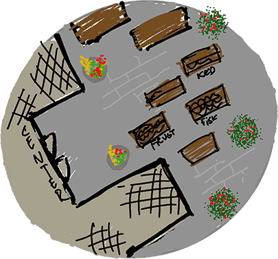
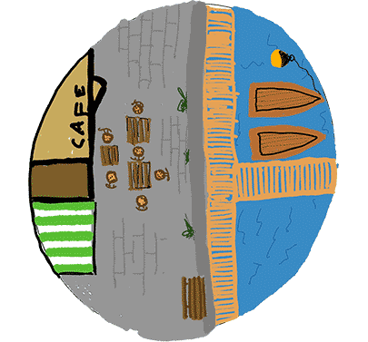
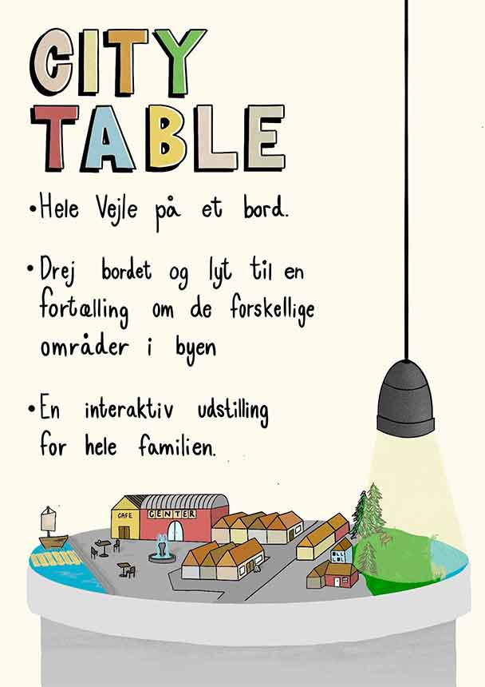

City Table
Koncept til interaktiv installation
Økolariet i Vejle er et økologisk oplevelsescenter for alle aldre. Deres installationer fokuserer på bæredygtighed og interaktivitet.
Deres udstilling “By-Laboratoriet” viser lokale arkitekters forestilling om fremtidens Vejle.
Til det skulle en ny interaktiv installation supplerer det samlede udtryk.
Som projektleder udarbejdede jeg sammen med min gruppe konceptet City Table - et roterbart bord med bymodel af Vejle ovenpå.
Når bordet roteres, videregives informationer om diverse projekter via speak, mens spotlys oplyser det område, der fortælles om.

Illustration af koncept


Konceptkunst lavet af Marco
